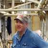
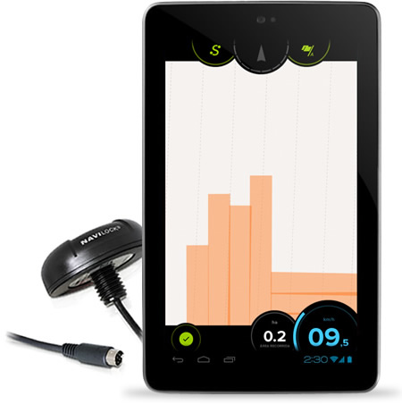

Ahorra tiempo y dinero
Olvídate de la espuma y de malgastar tu tiempo. Agroguía está diseñado para el trabajo con elevados anchos de trabajo.
Sencillo de usar
Configura el ancho del apero y pulsa empezar. A partir de ese momento Agroguía estará funcionando.
Fácil instalación
Basta con colocar un soporte en el cristal delantero, situar el GPS en el techo de la cabina y conectar la toma de corriente a la tableta.
 “Ya no puedo trabajar sin él.”
“Ya no puedo trabajar sin él.”
— Marcos, Vega de los arboles —
 “Desde que lo uso tengo gano un montón de tiempo
“Desde que lo uso tengo gano un montón de tiempo
— Carlos, Alaejos —

“Sencillo y práctico, para qué mas”
— Tomás, Villanueva —
Qué contiene el kit Agroguía
- Antena GPS.
- Dispositivo táctil con pantalla anti-reflejo.
- Soporte de seguridad para cristal delantero.
- Cable de alimentación
Tu kit llegará en 24-48h tras realizar tu pedido, y tras instalarlo (te llevará un máximo de 20 minutos), podrás empezar a trabajar con él.
Comprar ahora 999€ IVA NO INCLUIDO
